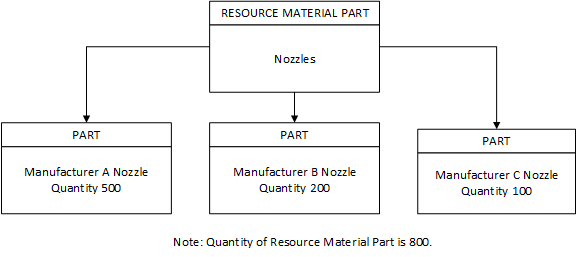

About Parts and Resource Material Parts
A part is a physical object that is stored in inventory, used on equipment, and then returned to inventory. An example of a part is a nozzle. Each part must be associated with a group called a “resource material part.” Resource material parts enable parts to be grouped by a set of characteristics such as: function, usage limit, recondition limit, lifetime limit, and expiry date.
This example explains the use of parts and resource material parts in Opcenter Execution Semiconductor.
A factory needs to purchase a specific type of nozzle. Three supply manufacturers make this nozzle. None of the manufacturers can provide the entire quantity needed. The factory purchases 500 nozzles from Manufacturer A, 200 from Manufacturer B, and 100 from Manufacturer C. Each purchase results in a part being added to Opcenter Execution Semiconductor—one per manufacturer from which the nozzles were purchased. Each part is assigned to the same resource material part, increasing the quantity of the resource material part by the total of all three purchases.
This diagram illustrates the example.

A Resource BOM (Bill of Materials) lists the resource material part or resource material parts required for a resource. The application checks the resource BOM for a resource during lot processing and loads a part that has a matching resource material part. The quantity of the part used is deducted from the resource material part's total quantity in inventory.
| Note: | Opcenter Execution Semiconductor uses the labels Material Parts and Resource Material Parts interchangeably. Resource Material Parts should not be confused with Material Parts, such as substrates, which are consumed during the manufacturing process. Look at the field list values when in doubt. |